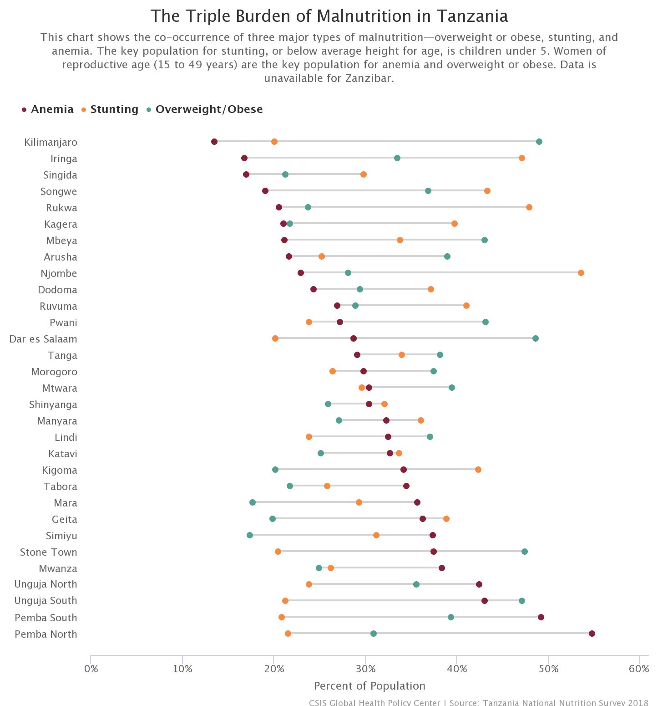

This chart shows the co-occurrence of three major types of malnutrition—overweight or obese, stunting, and anemia. The key population for stunting, or below average height for age, is children under 5. Women of reproductive age (15 to 49 years) are the key population for anemia and overweight or obese. Data is unavailable for Zanzibar. Hover over a dot to see the percentages of anemia, stunting, and being overweight/obese in each region. Click the dropdown to sort by a different indicator.
